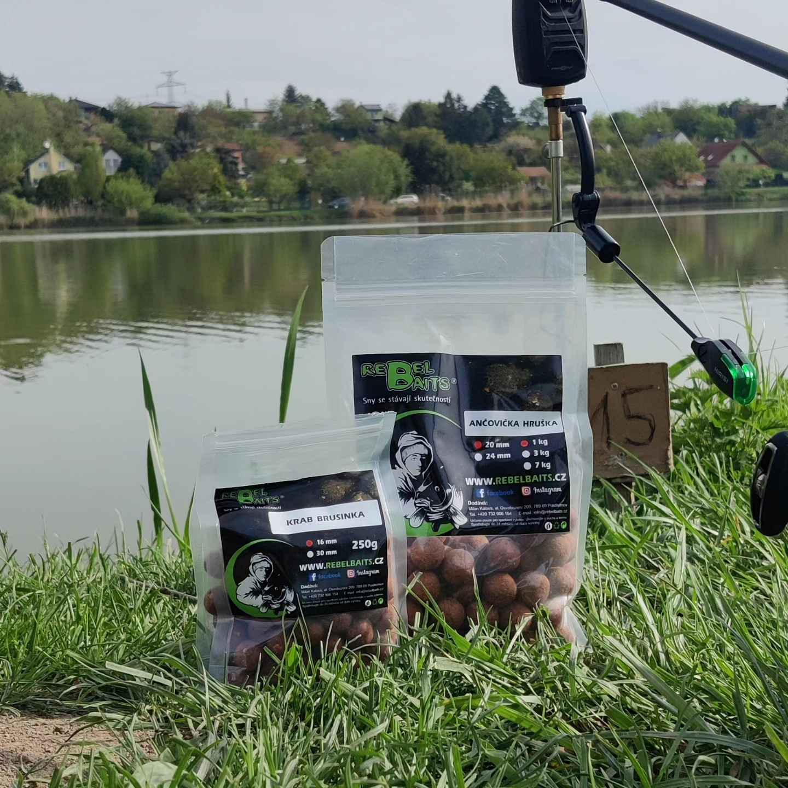
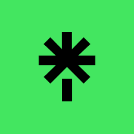
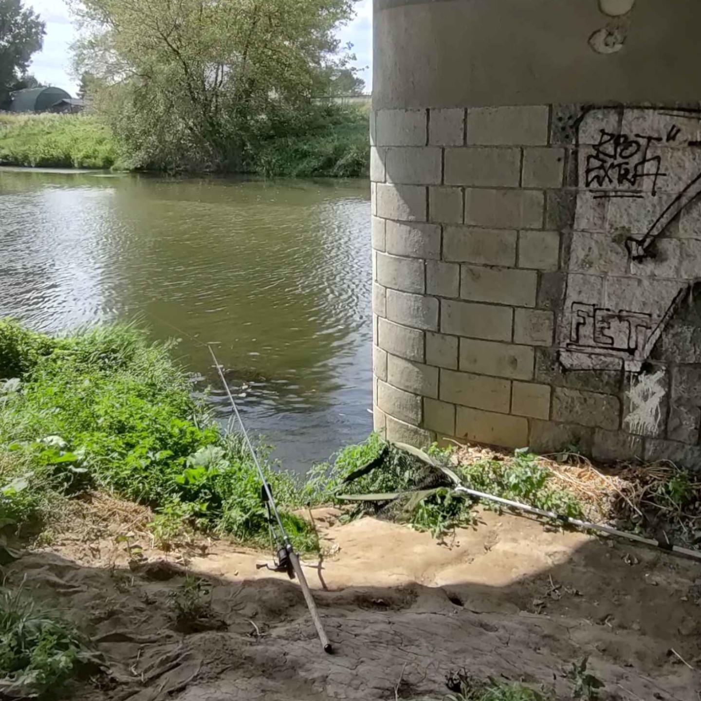
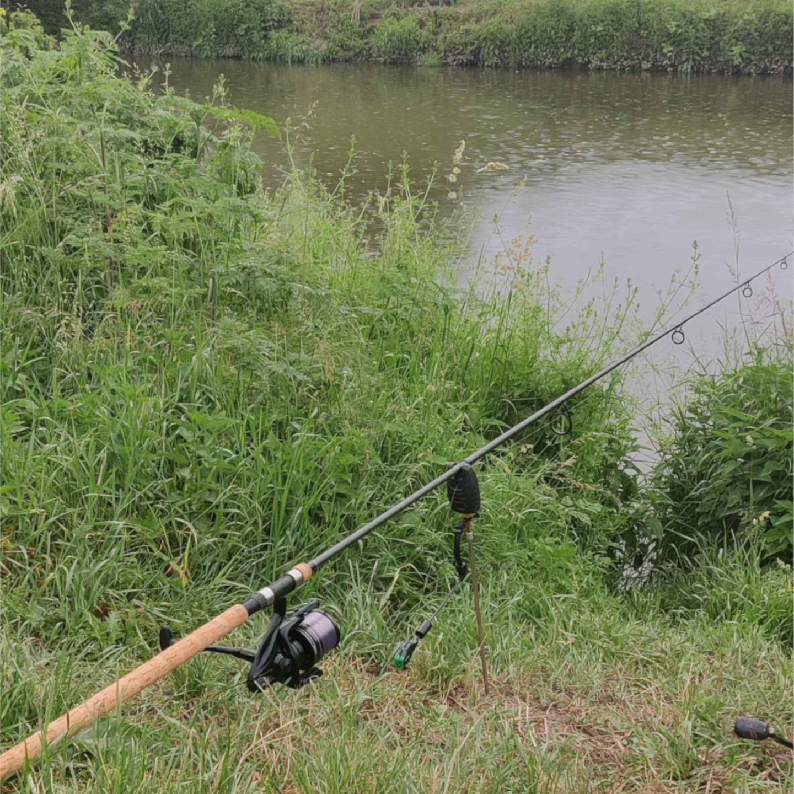
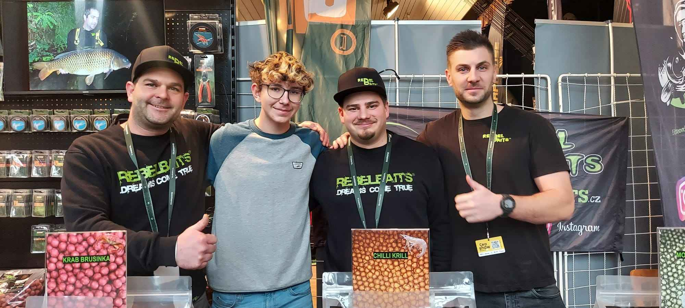

Plavaná
Klasika nadevše. Sledování splávku má své kouzlo, které nezestárne.
01Patnáct let. Tisíce hodin u vody. Nekonečná vášeň pro klid hladiny, šum stromů a napětí prvního záběru.

Brzy ráno na rybníceJmenuji se Tobiáš Sedláček a je mi 15 let. Rybaření se věnuji od nejútlejšího dětství — naučili mě to děda a táta a od té doby je voda mým druhým domovem.
Nejraději trávím čas u řek, rybníků a přehrad. Každé místo má své kouzlo — řeky jsou divoké a plné života, rybníky nabízejí klid a pohodu, přehrady ukrývají tajemství velkých ryb. Když sedím u vody, poslouchám zpěv ptáků, šumění stromů a sleduji vlnky na hladině, cítím se naprosto svobodný.
Rybaření pro mě není jen o úlovcích — je to o zážitcích, přátelství, trpělivosti a chvílích, na které se nedá zapomenout. Baví mě objevovat nové techniky, zkoušet různé nástrahy a sdílet své zkušenosti s ostatními.
Každá technika má svou duši. Tady jsou ty, které mě dostaly nejvíc.
Klasika nadevše. Sledování splávku má své kouzlo, které nezestárne.
01Přesnost, taktika a krmné směsi. Lov, který musíš mít promyšlený.
02Akce, dynamika a souboj s dravcem. Adrenalin, který tě vtáhne.
03Rád experimentuji. Některé nástrahy si vyrábím i sám — funguje to.
04Sleduj moje úlovky, videa a život u vody na sociálních sítích.
Připoj se k partě nadšenců, kteří žijí rybařením stejně jako já.
Připojit seVlogy od vody, ukázky technik a střípky z mých nejlepších úlovků.
NavštívitKaždodenní momenty, fotky úlovků a malá zákulisí mého rybařského života.
Navštívit
Všechny moje odkazy přehledně pohromadě — abys nic nepropásl.
OtevřítVybrané kousky z mé sbírky vzpomínek od vody.



Otázka, spolupráce, nebo jen sdílení zážitků? Najdeš mě na všech mých sítích.